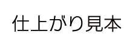
実際の商品への加工や、加工色のサンプルを掲載しています。
あなただけの服を、あなたの思い通りにカスタマイズしていただくために、こちらのページを参考にしてください。
※お客様のパソコン環境により色味が若干異なって見えてしまう場合があります。
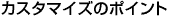
１．商品カラーと加工カラーはメリハリをつけることで綺麗に見えます。
２．綺麗に再現するためには、200dpi以上の解像度の画像を推奨
します。
３．文字数は少なくすると、綺麗に再現されます。
※文字数を多くすると、文字サイズが小さくなりつぶれる可能性があります。
※画数の多い文字は読み難くなることがあります。
- ■ このページの目次
- ＞ 加工の種類と特性について
- ＞ インクジェットプリントサンプル
- ＞ シルクプリントサンプル
- ＞ 解像度について
- ＞ 刺繍サンプル
- ユニクロカスタマイズでは、シルクプリントと、インクジェットプリント、転写プリントの３種類があります。
- ※商品の素材によって、インクジェットプリントと転写プリントを使い分けております。
■比較の参考
プリントの名称 |
シルクプリント |
インクジェットプリント |
転写プリント |
加工方法 |
１色ごとに、原版を作ってプリントします。 |
布地に直接インクを吹きつけてプリントします。 |
文字の形にカッティングしたシートを熱圧着します。 |
アップロード可能データ |
【○】pngのみ |
【○】png、ｊｐｇの２種類 |
【×】（アップロードには対応していません） |
加工可能カラー |
【全部で23色をご用意】 |
【フルカラー】 |
【全部で18色をご用意】 |
グラデーション・特殊効果 |
【×】 |
【◎】再現可能 |
【×】 |
仕上がり |
濃いカラー商品へ薄いカラーで加工しても、商品カラーに影響されることなく色の再現が可能です。 |
布地に直接加工するため、生地の風合いを損ねることの少ない仕上がりが可能です。 |
商品カラーの影響を受けずに加工カラーを再現できます。 |
加工箇所のサンプル |
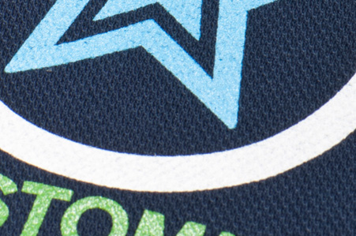 |
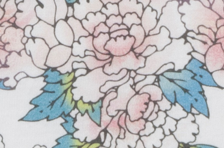 |
|
布地のカラーに影響されることなく、インクの厚みをいかした加工です。 |
布地の風合いをいかしたプリントです。 |
デザインを専用シートで作成、圧着するため、デザインのエッジ（境目）が綺麗に仕上がります。 |
- インクジェットプリントは商品に直接インクを吹きつけるため商品カラーによって発色が違います。
- カラー商品は発色を良くするために、下地に白インクを敷き、その上にプリント加工をします。
- 白い商品には、白インクは加工されません。
- ※一部白い商品の素材によっては、カラー商品と同じ加工をします。
- 商品素材に応じてプリントマシンを使い分けます。
- 商品カラーが濃色の場合、明るい色がきれいにプリントされない場合がございます。
- また、商品カラーに近い色でプリントすると、デザインや文字が見えにくくなる場合がございます。
- 下記のカラーサンプルと加工後の仕上がりイメージをご確認の上、ご注文をお願いいたします。
- ※Tシャツやパーカ等の濃色の商品でのプリントも、下記のポロシャツと同じような色合いになります。
■インクジェットプリントカラーサンプル
デザインデータ（ｐｎｇ） |
| 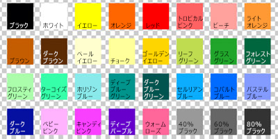 |
インクジェットプリント加工商品：ドライカノコポロシャツ（黒） |
ホワイト商品以外のカラー商品にインクジェットプリント加工を施す場合、発色を良くするために下地に白インク処理を行います。 |
| 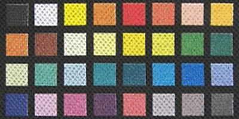 |
インクジェットプリント加工商品：トートバッグ |
トートバッグにインクジェットプリント加工を施した場合の仕上がり見本です。 |
| 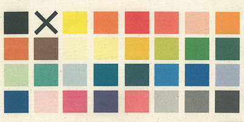 |
■インクジェットプリント仕上がりサンプル
デザインデータ（png） |
Tシャツ |
Tシャツ |
カノコポロシャツ |
カノコポロシャツ |
| 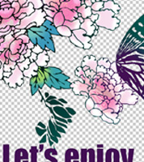 | 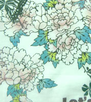 | 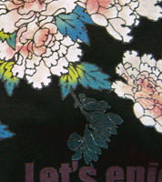 | 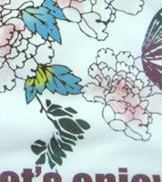 | 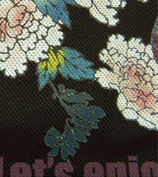 |
解像度200dpiの透過されたデザインデータ。 |
布地に馴染む仕上がりです。 |
デザインの下に白インクを敷いてからプリントします。 |
カノコの布地は凹凸があるため、細かい線や隙間は再現可能な範囲で加工します。 |
デザインの下に白インクを敷いてからプリントします。 |
- 商品カラーに影響されることなく、発色の良い加工が可能です。
- 色数ごとに原版の作成が必要です。
■シルクプリント仕上がりサンプル
デザインデータ（png）（加工カラー：黒） |
白いTシャツへ黒インクで加工 |
白いカノコポロシャツへ黒インクで加工 |
白いフリースへ黒インクで加工 |
| 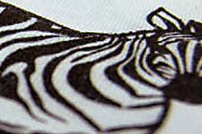 |  |
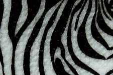 |
デザインデータ（png）（加工カラー：白） |
黒いTシャツへ白インクで加工 |
黒いカノコポロシャツへ白インクで加工 |
黒いフリースへ白インクで加工 |
| 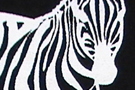 | 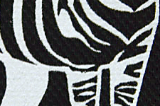 |
- 下に掲載している蝶のイラストのデザインデータは、横約10ｃｍで作成し、72dpiと200dpiの２種類の解像度で作成しています。
- モニターでは綺麗に見えた画像でも、実際の画像データの解像度が推奨の200dpi以下で作成すると、確認画面で表示されたイメージと仕上がりが異なる場合があります。
- ※お客様のデザインデータの修正は行いません。アップロードデータのまま加工します。
■解像度の違いサンプル（インクジェットプリント）
＜推奨＞ |
|||
72dpi（低い解像度）のデザインデータ |
解像度72dpiのデータを商品へ加工 |
解像度200dpiのデザインデータ |
解像度200dpiのデータを商品へ加工 |
解像度72dpiのデータをデザイン確認画面で確認すると、綺麗に見えてしまいます。 |
データのままの仕上がりとなるため、デザイン確認画面での表示と異なる仕上がりとなる場合があります。 |
高い解像度のデータは、拡大しても画像が綺麗に表示されます。 |
解像度の高いデータで加工すると、デザインと背景の境目などが綺麗に加工されます。 |
■高い解像度で加工の場合（インクジェットプリント）
高い解像度（200dpi）のデザインデータ |
画像編集ソフトの表示 |
「デザインの確認と注文数量の入力」画面での見え方（仕上がりイメージ画像） |
実際に商品へ加工 |
| 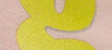 |
■低い解像度で加工の場合（インクジェットプリント）
低い解像度（72dpi以下）のデータ |
画像編集ソフトの表示 |
「デザインの確認と注文数量の入力」画面での見え方（仕上がりイメージ画像） |
実際に商品へ加工 |
デザインを作成の際は、加工サイズ、解像度に注意してください。 |
データを画像編集ソフトで拡大すると、ギザギザしているのが確認できます。 |
お客様のデータを修正せずに、加工しますので、荒い仕上がりとなります。 |
デザイン（画像内ですと文字のフチ部分）がギザギザとした仕上がりになる場合があります。 |
- 刺繍糸で文字を再現するため、プリント加工と違い立体的で高級感のある仕上がりです。
- 刺繍糸の色は全部で18色あります。
- 凹凸のあるカノコの布地、ニット商品、毛足の長いフリースへの刺繍、または、画数の多い文字での刺繍は、読みにくくなる場合があります。
- リバーシブル商品は、加工すると裏面に刺繍跡が出るため、リバーシブルとして着用できません。
加工カラー選択画面での色味見本 |
|||||||||||||
レッド |
蛍光 |
ピンク |
桜色 |
黄色 |
黄緑 |
グリーン |
ロイヤル |
サックス |
ブラック |
グレー |
ホワイト |
シルバー |
ゴールド |
加工をした商品名・・・ドライカノコポロシャツ |
|||||||||||||
| 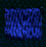 | 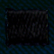 | ||||||||||||
デザインデータ |
シャツ商品へ加工 |
フリース商品へ加工 |
ニット商品へ加工 |
| 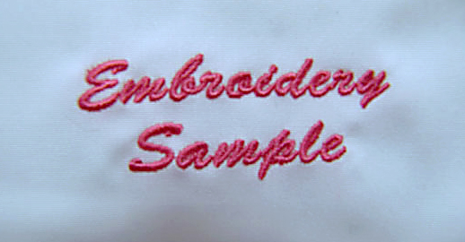 | |||
書体：Brush Script |
糸の運びで文字を立体的に加工します。 |
布地の毛足が長いため、少し埋もれたような仕上がりとなります。 |
毛糸で編んだ素材のため、布地とは仕上がりが異なる場合があります。 |
デザインデータ |
シャツ商品へ加工 |
フリース商品へ加工 |
ワンポイント：ブーケ 書体：Brush Script |
小さなワンポイントも綺麗に仕上がります。 |
フリースの毛足が長いため、細かい部分が埋もれてしまう可能性があります。 |